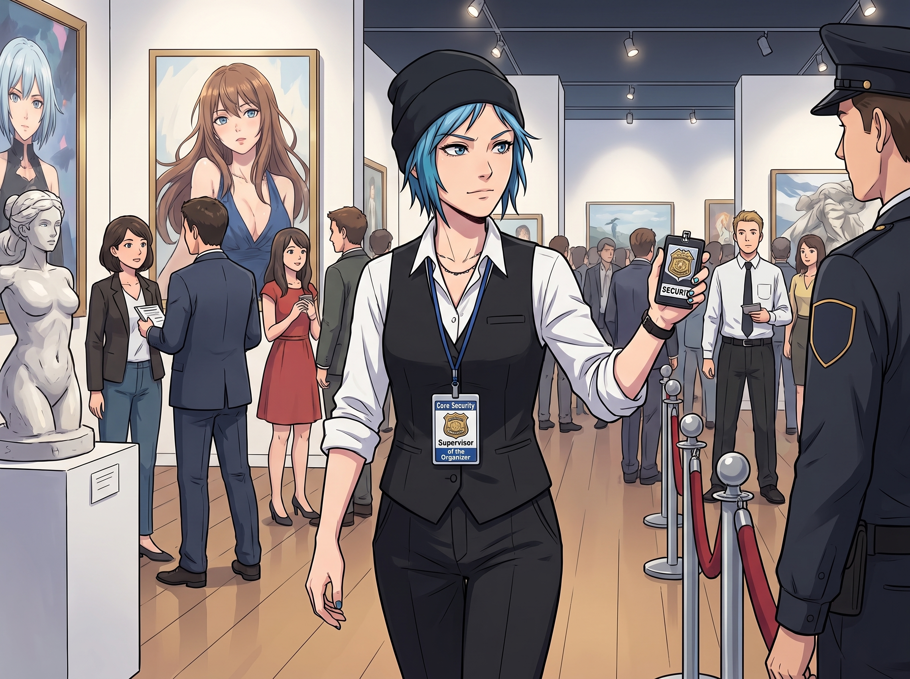
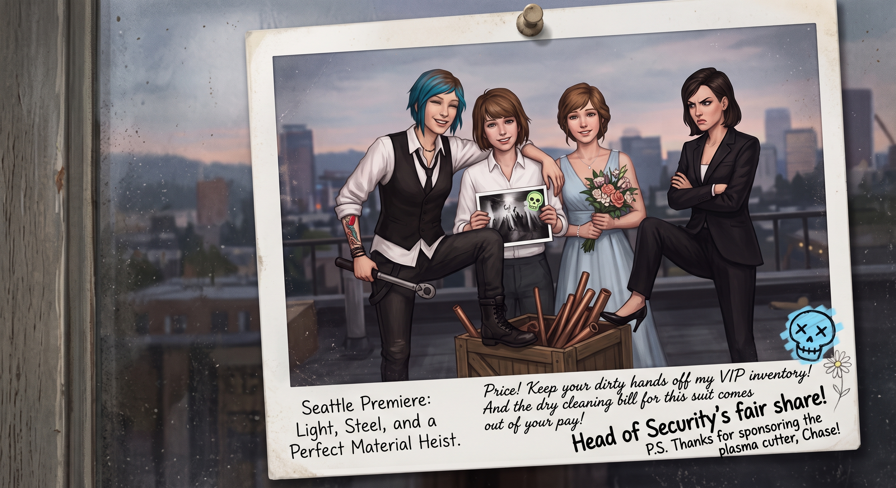

負空間


被 Victoria 當場判了三天勞役之後，Chloe 就換上了那身黑色西裝馬甲和白襯衫——袖子照樣捲到手肘。胸前掛著一張「主辦方核心安保主管」的全通胸卡，這張卡能進一般觀眾、甚至普通策展助理都進不去的每一個角落。
Victoria 把卡遞給她的時候說得很清楚：「這張卡是給妳搬東西用的，不是給妳交朋友用的。三天，妳給我當一件家具。」
「沒問題。」Chloe 說。她的視線已經在展廳裡繞了一圈——贊助商的茶歇桌、後台的耗材堆、中庭那件會轉的大傢伙。
一件家具的視線，不會這樣動。
一、 合法物資交接
當天下午，畫廊後台休息室就變成了 Chloe 的私人補給站。
憑著那張全通胸卡和一副人畜無害的表情，她在贊助商專供西雅圖名流的茶歇桌和後台之間往返了六趟。黑松露生巧、手工伊比利亞火腿薄脆，一盤接一盤地端走，嘴裡對著侍應生義正辭嚴：「這批樣品室溫放太久了，存在食品安全隱患。安保部門依法沒收，抽檢。」
等 Max 和 Victoria 忙完一輪導覽推開休息室門，兩個人一起石化在原地。
真皮沙發底下整整齊齊碼著三箱未開封的瑞士低鈉氣泡水，外加兩大提專供私人藏家的冷萃黑咖啡。Chloe 翹著二郎腿靠在沙發上，領帶扯得鬆鬆垮垮，正拿一把純鈦多功能小刀撬開一盒進口櫻桃果乾，嚼得嘎嘣響。
「Price……」Victoria 的手指發著抖指向地上，「那是機械藝術基金會主席點名要喝的水。妳把三箱全搬空了。」
「冷靜點，蔡斯。」Chloe 扔給 Max 一盒完好無損的松露巧克力，「主席先生剛才在門口跟我聊了二十分鐘他那台 69 年野馬的發動機漏油。他老人家親口跟我說『孩子，多喝點水補充體力』。」她攤手，「這叫合法物資交接。有目擊證人。」
二、 資源循環再利用
如果說順走零食只是常規操作，那 Chloe 對後台佈展廢料堆的處理，徹底震碎了 Max 的三觀。
展廳後方堆滿了各國裝置藝術家拆下來的耗材。在別人眼裡那是垃圾，在 Chloe 眼裡那是改裝天堂。
某件大型裝置作品拆箱後丟棄的高純度紫銅導管和重型阻燃電纜，被她用專業工具切成規整的段落，捆在工裝背包兩側：「這成色，拿回波特蘭夠給我的皮卡換一套頂級接地電路，還能順便幫 Kate 的溫室做一套全金屬散熱骨架。」
德國參展方丟棄的高強度樺木航空箱，被她當場用撬棍拆解重組，變成兩個帶滑輪的重型工具箱，還用畫廊剩下的黑色啞光噴漆，在側面噴上了「PRICE GARAGE」。
Max 端著相機站在旁邊，鏡頭蓋都忘了摘，看著 Chloe 在半小時內徒手把半噸「藝術廢料」打包成兩箱戰利品。
「Chloe……妳甚至借了主辦方的液壓拖車。」
「這叫資源循環再利用，Maxine。」Chloe 抹了把汗，拍了拍發亮的銅管，「藝術學院那幫少爺根本不懂這些金屬的含金量。老娘這是在拯救工業靈魂。」
三、 後門那根菸
第二天下午，Chloe 搬完一輪，溜到畫廊後門的防火梯上抽菸。
黑馬甲、白襯衫、鬆掉的領帶、捲起的袖子，逆著西雅圖灰白的天光靠在鏽鐵欄杆上——一個拎著帆布托特包的中年女人從坡道上來，看見她，停住了。
「不好意思，」女人有點激動，「妳是 Caulfield 吧？入口那張橋——我剛在裡面站了十分鐘。那個負空間的處理太篤定了。妳一定想了很久，才敢把主體整個推進暗部。」
三天前的 Chloe 會澄清。
今天的 Chloe 被沒收了一週的汽水配額，戴過紙帽子，簽過日內瓦公約。今天的 Chloe 心情不太好。
「對啊。」她彈了彈菸灰，「糾結了好幾個月。」
「果然！那個陰影的密度——」
「密度是關鍵。」Chloe 慢悠悠地說，「妳想想，一個東西，你越想讓人看見它，就越不能拿燈打在它臉上。得讓它自己從暗裡浮出來。就像……調氣門間隙。你使勁擰，它就卡死；你留一點餘量，它才轉得順。」
女人愣了兩秒，然後從托特包裡飛快掏出小本子記下來：「『留一點餘量它才轉得順』——太好了。妳形容它的方式像在講一台機器。」
「因為它就是一台機器。」Chloe 站起來掐了菸，「妳要進去看真跡的話，攝影師在裡面。藍白條紋襯衫，個子比我矮一顆頭。」她拍拍馬甲上的灰，「我還得去搬箱子。」
女人本來想遞出一張名片，Chloe 已經走進門了。她低頭看著那張還捏在手裡的名片——西雅圖當代機械藝術基金會，收藏總監——若有所思。
四、 齒輪
最後一天傍晚，就在閉幕酒會開始前，中庭那件大型動態齒輪雕塑，在幾百個受邀藏家面前卡死了。
德國藝術家一臉慘白，現場沒有他的技師，Victoria 在打第四通電話。一件不會動的動態雕塑立在展廳正中間，像個大型事故現場。
Chloe 拎著搬箱子的手套繞過去，趴下看底座。
「主軸定位銷剪斷了。金屬疲勞，運過來一路震的。」她抬頭，「我卡車工具箱有軍規扭力扳手和墊片。二十分鐘。」
德國人看向 Victoria。Victoria 閉了下眼：「去。」
十八分鐘後，那圈黃銅齒輪重新轉起來，咬合得比展前還安靜。全場鼓掌，以為是安排好的行為藝術環節。
酒會上，那位收藏總監——防火梯上跟 Chloe 聊過「餘量」的那個——沒有去找策展人，而是穿過人群，一把握住她的手：
「Price 小姐。剛才那台齒輪，還有妳在防火梯上跟我講的那套『餘量』——我們基金會決定，無償贊助妳在波特蘭的改裝工作室一台德國進口工業級等離子切割機，外加未來兩年所有金屬材料的採購折扣。」她轉頭對呆立的 Victoria 讚不絕口，「Chase 小姐，妳的安保團隊太專業了。這是我見過設備運轉最穩定的一屆展。」
Victoria 手裡的香檳杯差點捏碎，臉上的名媛笑容徹底崩成空白。
「謝啦，老兄。」Chloe 瀟灑地敬了個禮，轉身把那份沉甸甸的贊助協議「啪」地拍在 Victoria 胸口，朝著已經笑到扶牆的 Max 眨眨眼：
「看見沒有，長官？這才叫靠本事吃這碗藝術飯。」她把協議塞進馬甲內袋，「順便，蔡斯，今晚回波特蘭的後備箱借我用用。我那幾根銅管太長，皮卡後斗放不下。」
「Price。」
「嗯？」
「妳被罰的三天，還剩最後兩小時。去把入口那面牆的展籤拆了。」
「安啦。」
五、
閉幕，公眾散場，展廳只剩底燈。
Max 把相機架在一個「PRICE GARAGE」的工具箱上，設了十秒定時，轉身往主展位跑。
最後的陣型：Chloe 還穿著那身黑馬甲，領帶歪的，一隻腳霸道地踩在裝滿銅管的木箱上，右手攬著 Max 的肩，左手拎著那把賺來一台切割機的扭力扳手，笑得無比猖狂。Max 被攬在懷裡，手裡拿著那張加了骷髏的參展照片，一臉無奈又明亮。Kate 站在另一側，抱著一束不知從哪個 VIP 展台順下來的花，笑瞇瞇看著鏡頭。Victoria 站在最邊上，雙臂死死抱在胸前，臉頰氣鼓鼓的，正抬起一隻高跟鞋想去踢那個裝戰利品的木箱。
咔嚓。
幾天後，這張合照貼在波特蘭 Loft 天台的玻璃門上。相紙底部那道寬白邊上，留著三種筆跡：
Max 的圓體字，主標題：
西雅圖首展：光影、鋼鐵，以及一場非常成功的物資搶劫。
Victoria 力透紙背的花體字，擠在右上角：
Price！把妳的黑手從我的 VIP 物資單上拿開。西裝乾洗費從妳工資裡扣。
Chloe 潦草的朋克字，直接橫在 Victoria 那行下面：
安保主管的合法分紅。順便，感謝蔡斯大小姐贊助的等離子切割機。
最邊上，一個藍色螢光筆畫的、指甲蓋大的骷髏笑臉，還有 Kate 畫的一朵小雛菊。